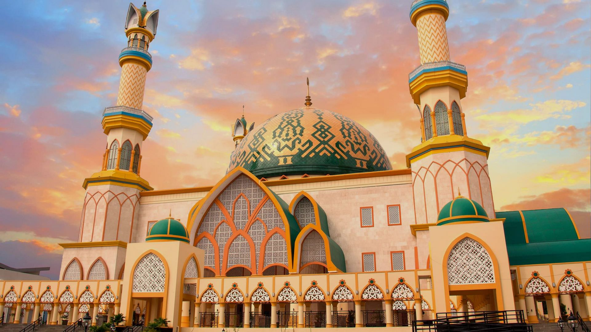

Wisata Religi Lombok

ISLAMIC CENTER
Masjid Raya Hubbul Wathan Islamic Center Mataram atau Islamic Center
Mataram merupakan masjid Daerah Provinsi Nusa Tenggara Barat yang
terletak di pusat Kota Mataram, Ibukota Provinsi Nusa Tenggara
Barat. Islamic Center Mataram mulai dibangun pada tanggal 9 Maret
2010 dan selesai pada 15 Desember 2013 yang ditandai dengan
diresmikannya oleh Gubernur NTB saat itu TGB. H.M. Zainul Majdi.
Masjid ini Berdiri diatas lahan seluas 74,749 meter persegi [4]
dengan memiliki 4 lantai, 5 kubah dan 5 menara satu diantaranya
memiliki ketinggian 99 meter yang melambangkan Asma'ul husna. Desain
warna kubah utama masjid ini memadukan warna corak khas batik
Sasambo (Suku Sasak- Samawa- Mbojo).
PURA BATU BOLONG
Lokasi Pura Batu Bolong berada pada salah satu situs geologi pantai
Batu Klayar. Sebuah pantai di selatan pantai Senggigi dengan teluk
yang terbentuk dari batuan lava andesit-basalan. Lava itu warisan
dari situs geologi kawasan Geopark Rinjani Lombok. Sesuai dengan
namanya, Pura Batu Bolong memiliki batuan menjorok ke arah laut yang
berlubang. Layaknya sebuah teluk dengan terowongan di bawahnya.
Lobang di batuan ini terbentuk karena adanya abrasi laut.
MAKAM KUNO BAYAN BALEQ
Masjid yang ada di Bayan ini merupakan salah satu bangunan yang
menjadi saksi bisu akan perkembangan Islam di tanah Lombok. Di
Masjid Kuno Bayan Balek ini terdapat sejumlah makam yang salah satu
diantaranya adalah makam Abdul Rozak yang dianggap sebagai orang
yang menyebarkan agama islam di Lombok. Di bagian lain masjid ini
terdapat gubuk kecil yang merupakan makam tokoh-tokoh agama yang
katanya merupakan orang-orang yang mengurusi pembangunan masjid
sejak awal. Menariknya, masjid yang berada di Desa Bayan, Kecamatan
Bayan, Kabupaten Lombok Utara ini hanya digunakan untuk peringatan
agama islam saja, seperti perayaan Hari Raya Idul Fitri.